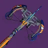
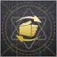
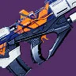
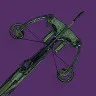
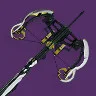

1
翻新 A499
动能
射速 72
弹药生成 26
赛季 28
- 框架
- 干扰武器
- 勇士
- 屏障
- 来源
- 反叛
槽化枪管
广口弹匣
孤狼
直击要害
嫉妒刺客
填装速度
AegisS
首个也是唯一一个重弹狙击枪 框架强但 3 号位一般
小棒猪T0
DPS5730备注狙击手冥想、远程填装、动能合成总伤148819 / 接近无限
建议刷取加速突击版本
本排名仅为各个枪的类别之内排名，不能作跨类别比较（例如：狙击枪的 S 梯队强度并不等同融合步枪的 S 梯队强度）。
注解中提及到的「双／三硬直组合」指大口径弹药、自带反势不可挡勇士功能的枪、阻止力 Perk 三者的任意组合，这些 Perk 能让战斗人员更容易被你的子弹打出硬直，从而有提升生存的效果。
「弹药生成 Perk」包括空中扳机／沙场备战等传统意义上帮助产弹的 Perk，亦指事不过四、精准连击等凭空生成子弹的 Perk。
划掉的字表示该来源现已不可获取。
首个也是唯一一个重弹狙击枪 框架强但 3 号位一般
建议刷取加速突击版本
基础产弹甚至高于完美逆行
最好最常用的副手清怪枪，perk 池优秀，三号位有顶级清怪 perk 空中扳机，操作手感极佳，起源特性加快奔跑速度。
注意副手火箭脉冲不吃回收
如果高地特定在上可用 可成为轮切伤害选项
豪华的 perk 池，不错的起源特性，存在 bug 能够同时吃到自己和副手的回收一盒强化弹药回 7 发，利用这个特性打本时可以用作捡绿弹武器，顶级的弹药经济武器，切割是非常优秀的 perk，适合猎人和汇编腿术士使用


操控性如果高地在 上可用 可成为轮切伤害选项
嫉妒军械库+高地配合三箭虚空猎，有机巧纬线+传家宝+好建议，单人特工命运眷顾的单人情况下顶级 dps（单人一波奈扎雷克）。还有三个需求层级射圈后切换到枯萎囤积/区域拒止等 dot 好建议双切的全游最高 DPS，曾经能刷到加速突击版本，如今已绝版，嫉妒军械库的打法在高难本也可以被使用来疯狂灌伤。

在火箭脉冲 DPS 已经没落的时代基本上没有存在的意义

很酷的清怪选择
唯一一把自填冰弩，需求层级射击穿插一发冰弩会比摁射需求层级高大约 25% 的 DPS，但通常没有必要为自己增加操作难度，二号位充能弩箭最优秀
幸运裤被砍后用途不大 精确伤害打战斗人员还行 但其他方面被压过 叠单人特工好用
仅此一把，注意现在是否用血色浪漫叠层伤害区别不大，空扳连射 18 发需要加速突击散热全中的无礼言论，可以用 vog4 冷却饰品补足

没有双伤害 Perk 但填装/伤害 Perk 优秀